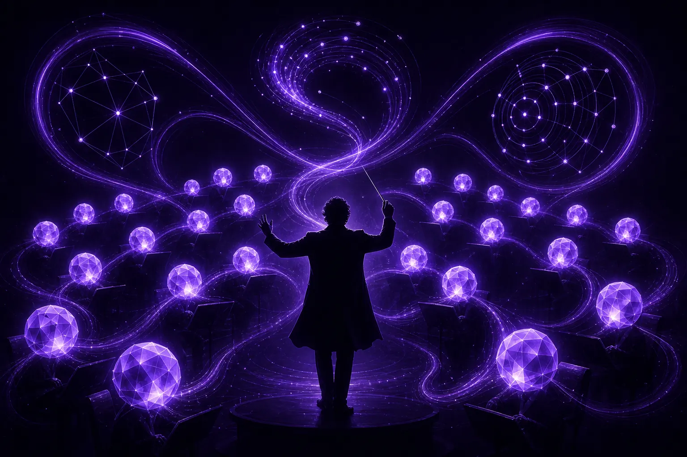

Apakah pemasaran agentik, dan siapa yang mengkonduksi ejen?

Pemasaran agentik ialah pemasaran di mana ejen AI merancang dan melaksanakan tugas berbilang langkah, seperti penyelidikan khalayak, merangka kreatif dan pengoptimuman kempen, dengan gesaan yang terhad. Ejen bertindak, menyemak hasil dan mencuba lagi. Bahagian yang paling penting ialah bahagian yang tidak patut dimiliki ejen: ahli strategi manusia yang menentukan matlamat, menetapkan batasan dan bertanggungjawab atas apa yang diterbitkan.
Apakah yang menjadikan alat pemasaran "agentik"?
Chatbot menjawab soalan. Ejen mengejar matlamat. Perbezaan praktikalnya ialah ejen boleh memecahkan tugas kepada beberapa langkah, menggunakan alat sepanjang jalan, melihat apa yang berlaku dan menyesuaikan diri. Minta chatbot sepuluh tajuk dan anda mendapat sepuluh tajuk. Berikan ejen matlamat mencari mesej yang mendapat sambutan dalam kalangan ibu bapa kali pertama di Singapura dan ia boleh membaca perbualan yang relevan, mengelompokkan kebimbangan orang, merangka mesej berdasarkan kebimbangan itu, dan mencadangkan mana yang patut diuji dahulu.
Gelung bertindak, memerhati, menyesuaikan itulah yang mengubah AI daripada pembantu penulisan kepada sesuatu yang lebih hampir dengan pasukan junior. Ia juga yang menjadikan pemasaran agentik berisiko apabila tiada siapa memerhatikan gelung itu.
Takrifan yang wajar dipersetujui
- Ejen: perisian yang mengejar matlamat merentas beberapa langkah, menggunakan alat dan maklum balas, tanpa manusia memberi gesaan pada setiap langkah.
- Gelung: kitaran berulang tindakan dan semakan, contohnya penyelidikan, draf, ujian, pembelajaran.
- Konduktor: manusia yang menetapkan matlamat, batasan dan keputusan akhir. Di AgentC, huruf C mewakili peranan ini.
- Titik semak: titik dalam gelung di mana ejen mesti berhenti dan menunggu kelulusan manusia.
Gelung pemasaran manakah yang sesuai untuk ejen?
Kami menjalankan tiga gelung di AgentC, dan ia sepadan dengan kemas dengan kerja yang dianggap berulang tetapi penting oleh kebanyakan pasukan pemasaran.
1. Gelung penyelidikan
Ejen penyelidikan membaca perbualan khalayak secara berterusan, bukan sekali setiap suku tahun. Ejen kami berjalan di atas SOMIN, platform penyelidikan khalayak AI, menggunakan ejen AI SOMIN untuk menyahkod nada, emosi dan ketegangan dalam hantaran media sosial sebenar. Outputnya bukan dek pembentangan; ia senarai hidup ketegangan dan momen, setiap satu dipautkan kepada hantaran yang membuktikannya.
2. Gelung kreatif
Ejen kreatif mengambil ketegangan yang paling kukuh dan merangka laluan: tajuk, cangkuk, skrip, hala tuju visual. Volum murah bagi ejen, jadi tugasnya beralih daripada menghasilkan pilihan kepada memilih antaranya. Pilihan itu milik manusia, dan kami menerangkan sebabnya dalam tulisan kami tentang cita rasa dan suntingan manusia.
3. Gelung pengoptimuman
Ejen pengoptimuman memantau kempen langsung, mengesan keletihan kreatif, menandakan perbelanjaan yang membazir dan mencadangkan pemindahan bajet. Perubahan kecil yang boleh diterbalikkan dalam bajet yang dipersetujui boleh berlaku secara automatik. Apa-apa yang mengubah mesej atau khalayak menunggu manusia.
Mengapakah pemasaran agentik memerlukan konduktor?
Kerana ejen ialah pengoptimum, dan pengoptimum bersifat harfiah. Suruh ejen memaksimumkan kadar klik dan ia akan menemui umpan klik. Suruh ia mengurangkan kos setiap pemerolehan dan ia mungkin secara senyap meninggalkan khalayak yang mengambil masa lebih lama untuk bertukar tetapi kekal setia. Semua itu bukan berniat jahat. Itulah yang berlaku apabila kecekapan menjadi satu-satunya arahan.
Wawasan yang menjadi asas agensi kami datang daripada mendengar pemasar bercakap tentang AI: teknologi beretika memerlukan keberanian untuk mengutamakan kemanusiaan berbanding kecekapan. Dalam amalan, keberanian itu mempunyai jawatan. Seseorang perlu memiliki soalan yang tidak dapat dijawab ejen:
- Adakah ini benar kepada identiti jenama, atau sekadar berkesan minggu ini?
- Adakah kami selesa jika pelanggan melihat bagaimana keputusan ini dibuat?
- Adakah ini momen di mana manusia patut bercakap dengan manusia?
- Siapakah yang bertanggungjawab jika ini tidak menjadi?
Sebuah orkestra boleh memainkan setiap not dengan betul tetapi masih terlepas muziknya. Tugas konduktor ialah muzik itu.
Bagaimanakah agensi agentik berbeza daripada agensi tradisional?
Agensi tradisional menghabiskan kebanyakan jamnya untuk pengeluaran dan pelaporan. Agensi agentik menghabiskan kebanyakan jam manusianya untuk pertimbangan. Ejen menyerap kerja mengimbas, merangka dan memantau; ahli strategi menghabiskan masa mereka untuk tafsiran, keputusan jenama dan perbincangan dengan pelanggan.
Peralihan itu mengubah apa yang patut anda tanya kepada agensi. Bukan "berapa ramai orang dalam akaun saya?" tetapi "siapa yang memutuskan, pada titik mana, dan bagaimana saya melihat buktinya?" Kami mengupas sisi tadbir urus soalan itu dalam cara mentadbir ejen pemasaran AI.
Bagaimanakah rupa projek agentik pertama yang baik?
Mulakan secara sempit. Satu khalayak, satu saluran, satu soalan perniagaan yang jelas. Contoh yang dihuraikan:
- Taklimat: sebuah jenama penjagaan kulit premium mahu memahami mengapa pembelian berulang menurun dalam kalangan pelanggan berusia tiga puluhan.
- Gelung penyelidikan: ejen membaca perbualan tentang rutin penjagaan kulit, kepekaan harga dan keraguan terhadap ramuan, kemudian mengelompokkan ketegangan yang berulang.
- Titik semak manusia: ahli strategi menyemak ketegangan berbanding bukti dan memilih dua yang wajar diambil tindakan, menolak satu yang benar tetapi tidak selaras dengan jenama.
- Gelung kreatif: ejen merangka mesej bagi setiap ketegangan. Ahli strategi menyunting dan meluluskan senarai pendek.
- Gelung pengoptimuman: ejen menjalankan dan memantau ujian, menghentikan sementara varian yang lemah dalam bajet dan melaporkan apa yang mereka ubah serta sebabnya.
- Semakan: ahli strategi menerangkan keputusan kepada pelanggan dalam bahasa yang mudah, termasuk apa yang tersilap dilakukan ejen.
Agensi yang bekerja di atas SOMIN telah mendokumenkan aliran yang serupa; kajian kes Havas Media ialah bacaan berguna tentang cara agensi mapan menggabungkan penyelidikan khalayak AI ke dalam prosesnya.
Di manakah saya boleh mengetahui lebih lanjut tentang pemasaran agentik?
Selain blog ini, komuniti di Marketing Mondays kerap menyahkod cara AI membentuk semula pasukan pemasaran, dan sesi bersemuka mereka di Singapura ialah tempat yang baik untuk bertukar pandangan dengan orang yang menjalankan ejen dalam pengeluaran. Jika anda memikirkan model penaakulan di bawah ejen, studio saudara kami GPT5 Marketing memberi tumpuan kepada lapisan itu.
Apakah tanda amaran pemasaran agentik yang dilaksanakan dengan buruk?
Anda biasanya dapat mengetahuinya dalam sebulan. Volum output meningkat dengan mendadak manakala bilangan keputusan yang boleh diterangkan sesiapa menurun. Laporan menerangkan apa yang dilakukan ejen tetapi bukan sebabnya. Pasukan jenama mula menemui salinan yang tidak pernah mereka luluskan. Tiada siapa dapat menamakan orang yang bertanggungjawab bagi sesuatu gelung. Setiap satu daripada ini ialah simptom punca yang sama: ejen dilaksanakan sebagai pengganti pertimbangan dan bukannya sokongan kepadanya.
Penyelesaiannya bukan mematikan ejen. Ia ialah meletakkan semula konduktor di atas podium, menulis untuk apa setiap ejen, dan memutuskan di mana ia mesti berhenti dan bertanya.
Ringkasnya: ejen memberi anda tempo. Konduktor memberi anda muzik. Anda memerlukan kedua-duanya, dan anda perlu tahu yang mana satu. Jika anda mahu mencuba gelung pertama, beri taklimat kepada ejen di ask@agentc.marketing.
Soalan lazim
Adakah pemasaran agentik sama dengan automasi pemasaran?
Tidak. Automasi pemasaran mengikut peraturan tetap yang anda tulis terlebih dahulu. Pemasaran agentik menggunakan ejen AI yang mengejar matlamat merentas beberapa langkah dan menyesuaikan diri berdasarkan hasil, yang lebih fleksibel dan memerlukan pengawasan manusia yang lebih kukuh.
Adakah ejen AI menggantikan ahli strategi pemasaran?
Tidak di AgentC. Ejen mengambil alih kerja mengimbas, merangka dan memantau. Ahli strategi mengekalkan penetapan matlamat, pertimbangan jenama, kelulusan kreatif baharu dan akauntabiliti kepada pelanggan.
Apakah teknologi yang digunakan ejen AgentC?
Ejen AgentC berjalan di atas SOMIN, platform penyelidikan khalayak AI yang ejennya menganalisis perbualan khalayak sebenar dan memautkan setiap wawasan kepada hantaran yang menyokongnya.
Beri taklimat kepada ejen
AgentC ialah agensi pemasaran agentik. Ejen kami menyelidik, mencipta dan mengoptimumkan sepanjang masa; ahli strategi kami memutuskan apa yang penting, apa yang sesuai dengan jenama dan apa yang tidak sepatutnya diautomasikan sama sekali.
E-mel ask@agentc.marketing →